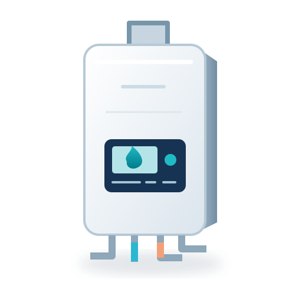

전원·점화·에러 표시
전원이 켜지는지, 운전 중 멈추는지, 표시되는 문자·숫자를 구분해 기록하세요. 에러코드는 제조사와 모델마다 다르므로 숫자만으로 원인을 판단하지 않습니다.

전원이 켜지는지, 운전 중 멈추는지, 표시되는 문자·숫자를 구분해 기록하세요. 에러코드는 제조사와 모델마다 다르므로 숫자만으로 원인을 판단하지 않습니다.
모든 수도에서 같은지, 특정 수전에서만 발생하는지와 난방 작동 여부를 알려주세요. 보일러 본체와 수전·급수 배관 문제는 점검으로 구분합니다.
전체 공간인지 일부 방인지, 조절기 표시와 온수 상태를 알려주세요. 본체·조절기·분배기·난방 배관의 점검 범위와 담당 업체를 확인합니다.
물샘이 보이는 위치와 발생 시점, 난방·온수 사용 중 언제 소음이 나는지 전달하세요. 열원으로 직접 녹이거나 뜨거운 물을 붓지 말고 제조사에 먼저 문의하세요.
| 작업 | 확인할 정보 | 비용이 달라지는 조건 |
|---|---|---|
| 고장·에러·온수·난방 점검 | 제조사·모델·연료·에러코드·증상 발생 조건 | 출장·진단비, 수리비와 부품비, 제조사 보증 적용 여부 |
| 조절기·난방 배관 확인 | 실내조절기 모델, 일부 방인지 전체인지, 보이는 물샘 위치 | 본체·조절기·분배기·배관 중 점검 범위와 별도 공사비 |
| 보일러 교체·설치 상담 | 주택·난방 면적, 기존 모델·연료, 설치 공간·배기 및 배수 조건 | 제품비·기본 설치비·연통·배관·철거·폐기·부가세·추가 작업 포함 범위 |
특정 판매 가격이나 출장비를 예스수리 공통 요금으로 제시하지 않습니다. 실제 금액·수리 가능 여부는 진단과 업체 조건에 따라 확인하세요.
연통·가스 배관·본체 설치는 직접 시공 안내를 제공하지 않습니다. 현장 조건과 제품 설명서에 맞는 전문 시공을 상담하세요.
본체·밸브·연결 배관 중 어디에서 보이는지 사진으로 전달해 점검 범위를 먼저 상담하세요. 바닥이나 벽 안의 배관 문제라면 누수·배관 분야 점검이 별도로 필요할 수 있습니다.
사용 기간만으로 수리나 교체를 결정하지 않습니다. 진단 결과, 부품 수급, 수리 견적, 기존 보증과 교체 설치비를 함께 확인하세요.
에러 표시는 제조사·모델별 의미가 다릅니다. 모델명과 증상을 함께 전달하고 서비스센터 진단을 받으세요.
공식 제조사 안내 확인일: 2026. 10. 20. 제품별 정확한 조치·설치·보증 조건은 해당 모델의 설명서와 제조사 안내를 우선 확인하세요.
현재 전문가 프로필은 예시입니다. 실제 보일러 수리 업체 연결·견적 접수는 준비 중이며, 제조사 고객지원은 위 공식 안내에서 확인할 수 있습니다.